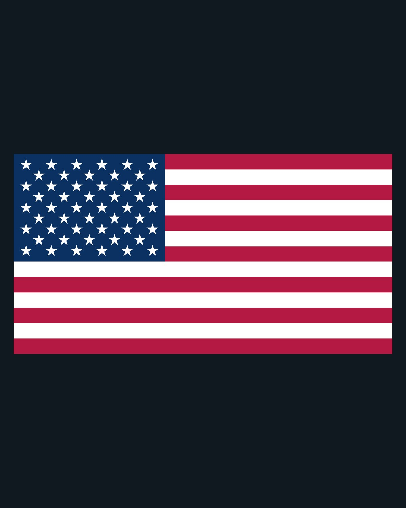
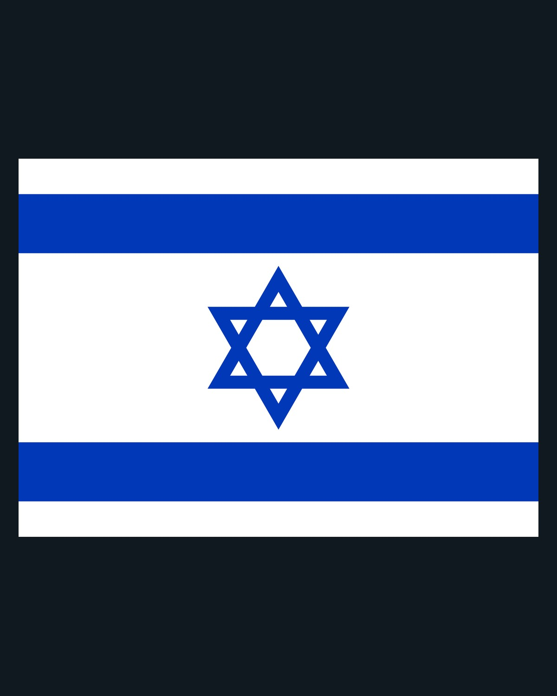
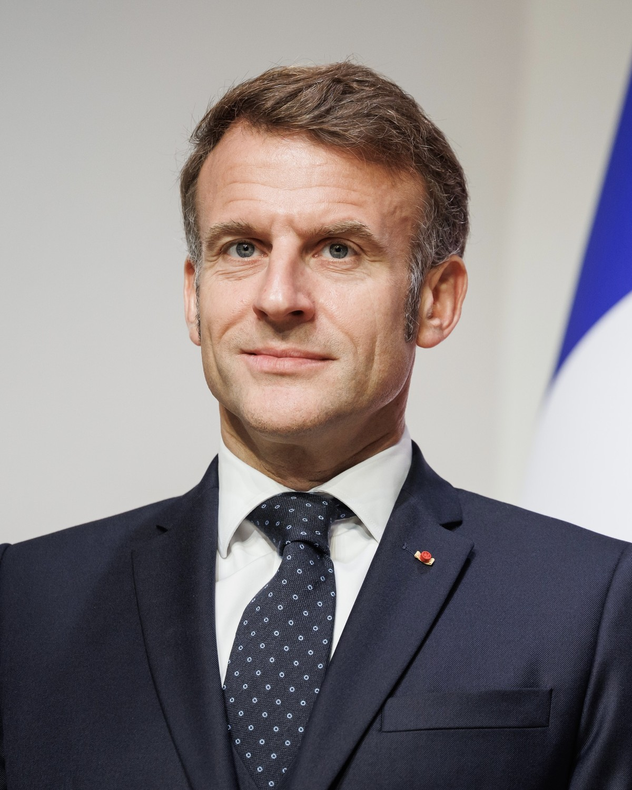
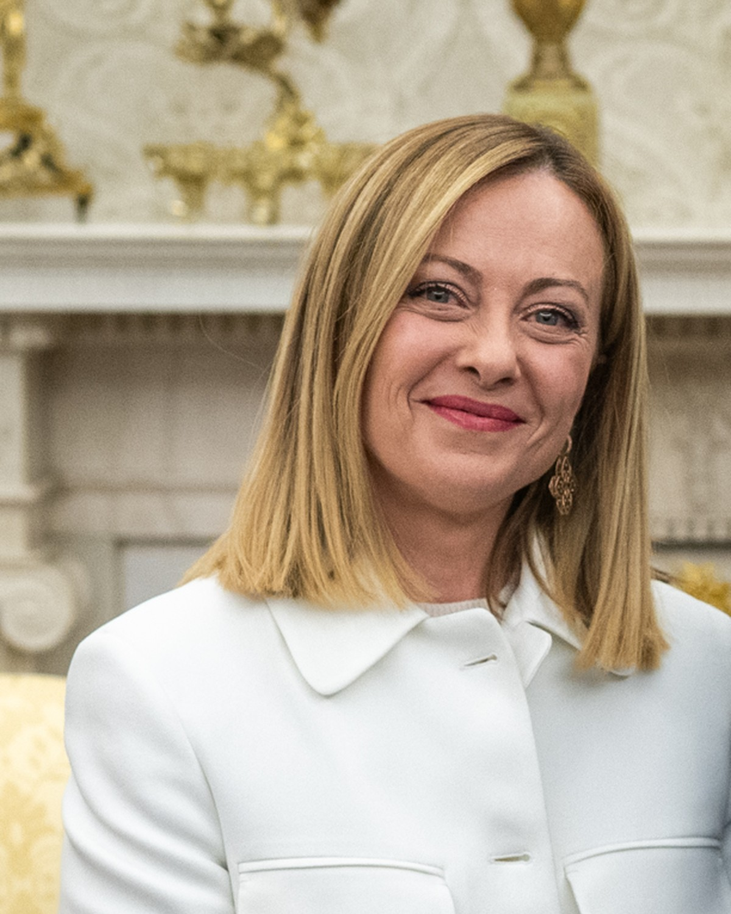
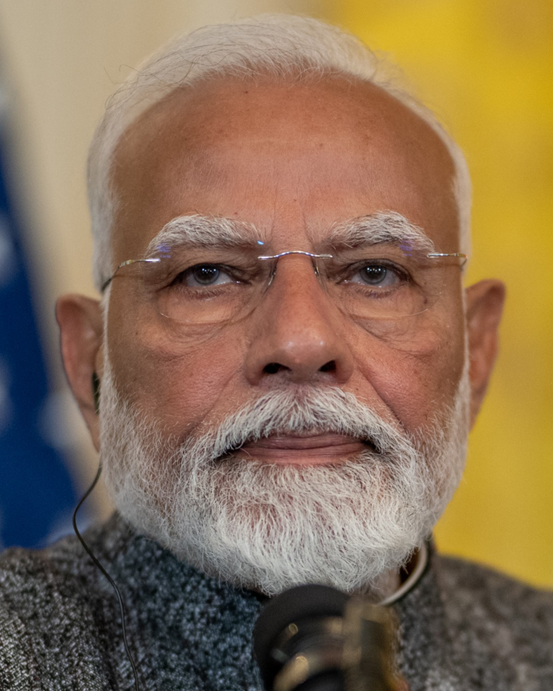
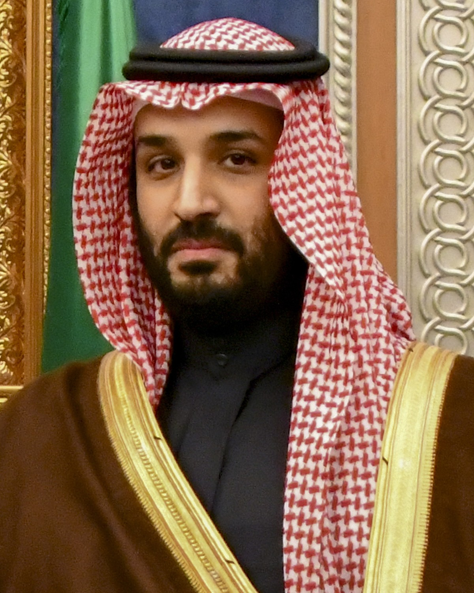
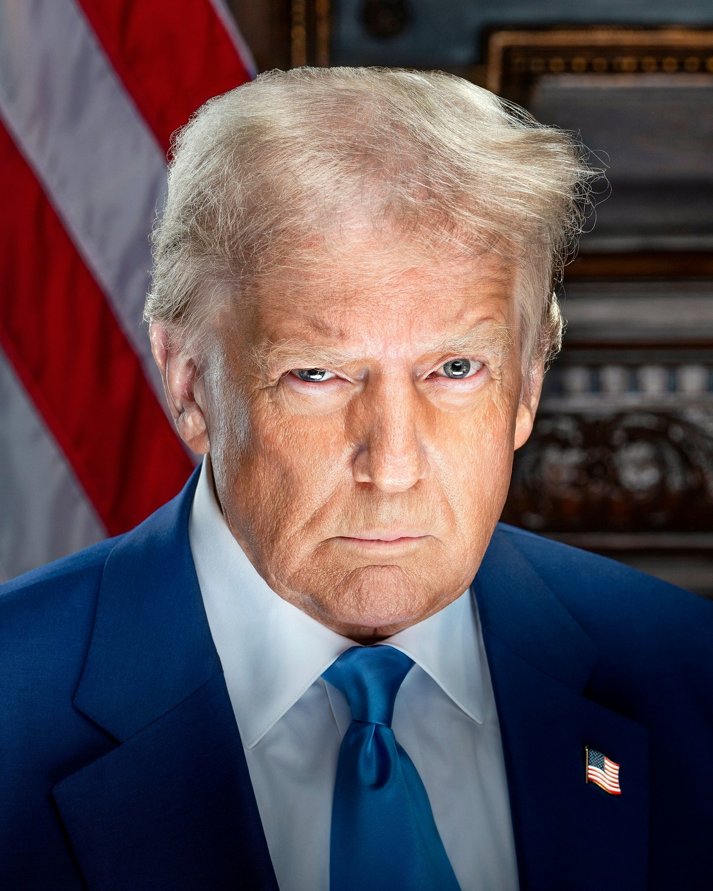
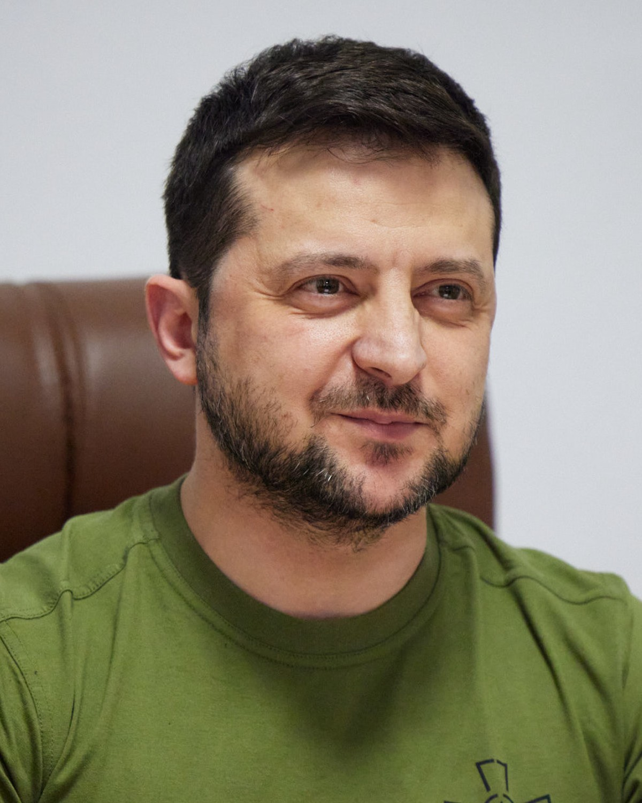

JustInHQz · image layout previews
Clean portraits and full-design flag panels, no publisher overlays. These are layout demonstrations, not news posts.
Country story · France
Two countries · US + Israel


Two subjects · Macron + Meloni


Business figures · Musk + Bezos
Two subjects · Modi + Mohammed bin Salman


Two subjects · Trump + Zelensky


Two subjects · Trump + Putin
Two subjects · Trump + Xi
One subject · Netanyahu